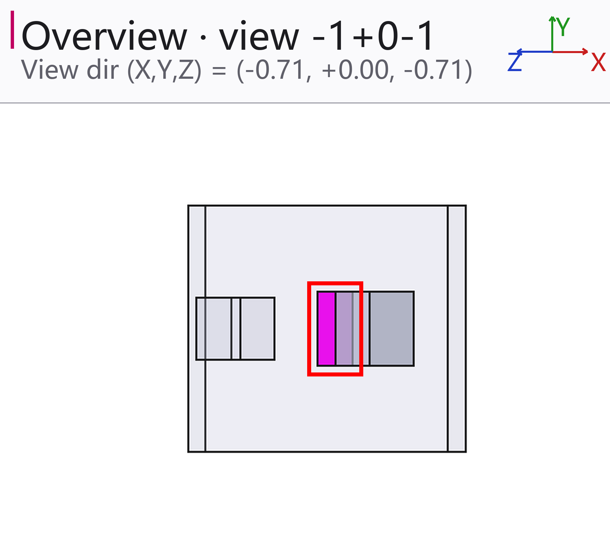
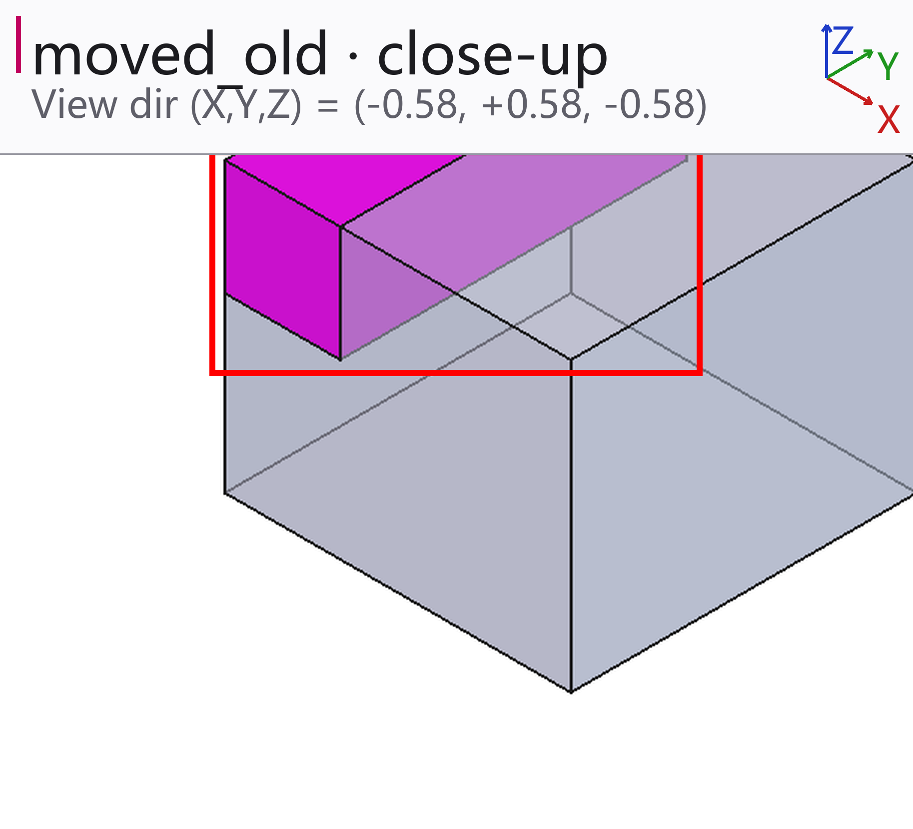
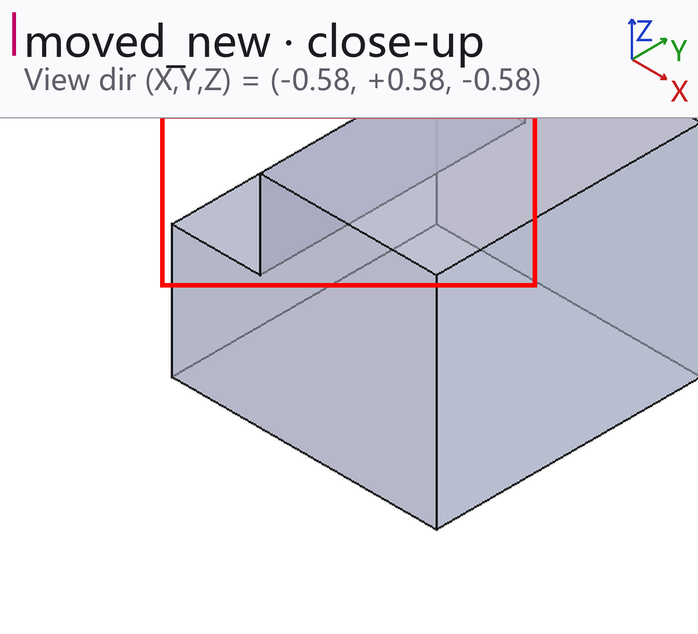
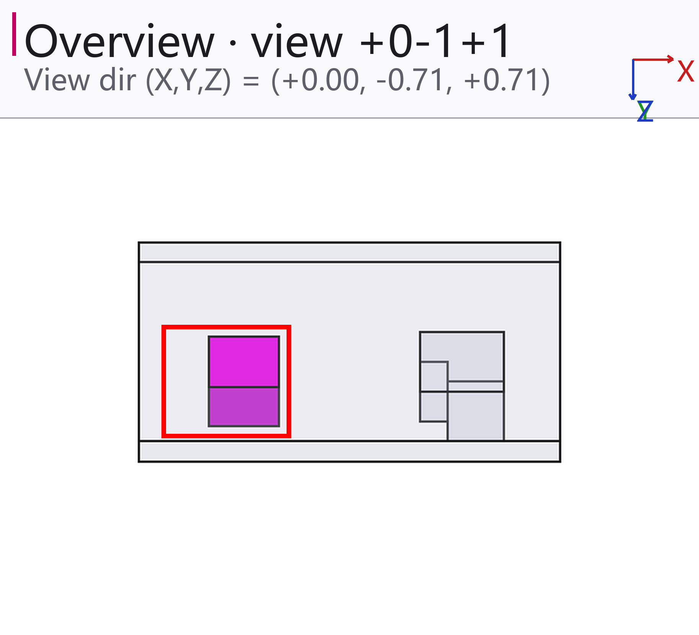
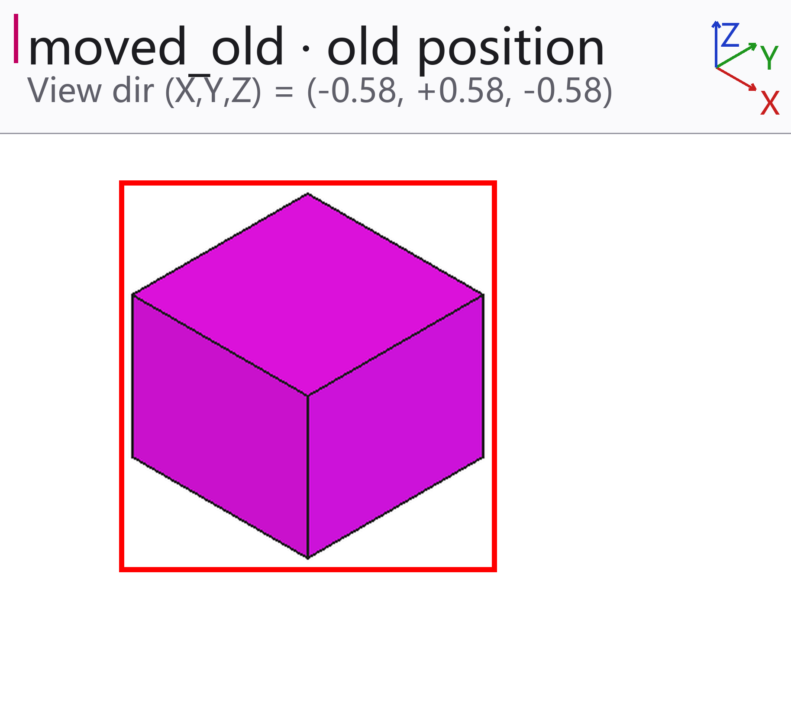
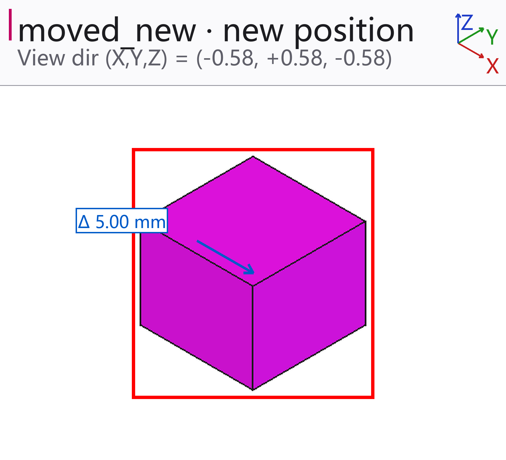

Geometry diff report — ? → ?
moved_old.stp → moved_new.stp
2 geometric change(s), 0 BOM-level change(s)
Geometric changes
1. BRACKET_03 — shape changed
| Volume change | 192.00 mm³ |
|---|---|
| Volume change (%) | 15.38 % |
| Material removed | 192.0000 mm³ |
| Material added | 0.0000 mm³ |
| Separate clusters | 1 |
| Changed extent | 4.0 × 12.0 × 4.0 mm |



2. SLIDER_02 — moved
| Translation | 5.00 mm |
|---|---|
| Changed extent | 10.0 × 10.0 × 8.0 mm |



Not compared / not resolved
- **MovedFixture** — assembly container — its shape is the union of its children, so it is not counted separately
Settings used
| boolean_timeout_s | 60 |
|---|---|
| max_faces_for_boolean | 5000 |
| min_diff_pct | 0.0 |
| render_timeout_s | 300 |
| skip_parts | [] |